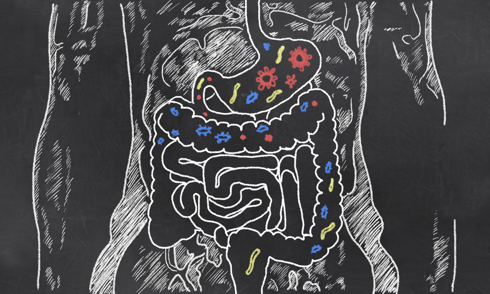

Vitamin D improves gut flora and metabolic syndrome
aperture':'0','credit':'','camera':'','caption':'','created_timestamp':'0','copyright':'','focal_length':'0','iso':'0','shutter_speed':'0','title':'','orientation':'0'}' data-image-title='gut-bacteria-microbiome-translational-research' data-large-file='https://frontiersinblog.files.wordpress.com/2016/12/gut-bacteria-microbiome-translational-research.jpg?w=940' data-medium-file='https://frontiersinblog.files.wordpress.com/2016/12/gut-bacteria-microbiome-translational-research.jpg?w=300' data-orig-file='https://frontiersinblog.files.wordpress.com/2016/12/gut-bacteria-microbiome-translational-research.jpg' data-orig-size='1000,600' data-permalink='https://blog.frontiersin.org/2016/12/22/vitamin-d-improves-gut-flora-and-metabolic-syndrome/gut-bacteria-microbiome-translational-research/' sizes='(max-width: 940px) 100vw, 940px' src='https://frontiersinblog.files.wordpress.com/2016/12/gut-bacteria-microbiome-translational-research.jpg' srcset='https://frontiersinblog.files.wordpress.com/2016/12/gut-bacteria-microbiome-translational-research.jpg?w=940 940w, https://frontiersinblog.files.wordpress.com/2016/12/gut-bacteria-microbiome-translational-research.jpg?w=150 150w, https://frontiersinblog.files.wordpress.com/2016/12/gut-bacteria-microbiome-translational-research.jpg?w=300 300w, https://frontiersinblog.files.wordpress.com/2016/12/gut-bacteria-microbiome-translational-research.jpg?w=768 768w, https://frontiersinblog.files.wordpress.com/2016/12/gut-bacteria-microbiome-translational-research.jpg 1000w'>
Posted On: 2016-12-22T00:00:00

Content Date: 2016-12-22
Download Date: 2021-07-10
Document ID: L0C04F4NW